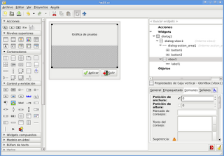
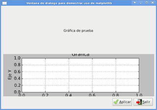
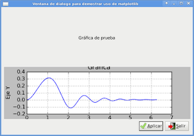

Desarrollo de aplicaciones gráficas con python+gtk+glade. Parte 9. Matplotlib
Posted on vie 01 enero 2010 in Tutorial Python
Continuando con los artículos de desarrollo de aplicaciones con python y gtk. Ahora uniré los artículos relacionados con matplotlib y gtk. Se diseño una ventana de dialogo con una gráfica en el centro, 2 botones, uno para cargar la curva en la gráfica y el otro botón para cerrar la aplicación. La figura muestra el diseño de la interfaz con glade.

El código de la creación de la aplicación es el siguiente:
#!/usr/bin/env python
# -*- coding: utf-8 -*-
#Importar módulo gtk y matplotlib
import gtk
import matplotlib
matplotlib.use('GTK')
#Importar la clase figure, subplot, figurecanvasgtk, figurecanvas
from matplotlib.figure import Figure
from matplotlib.axes import Subplot
from matplotlib.backends.backend_gtk import FigureCanvasGTK, NavigationToolbar
from matplotlib.backends.backend_gtkagg import FigureCanvasGTKAgg as FigureCanvas
#Importar numpy
import numpy as np
#Definición de la clase
class App:
def __init__(self):
#Manejo del archivo glade por medio de gtkbuilder
self.glade_file = "ej10.ui"
self.glade = gtk.Builder()
self.glade.add_from_file(self.glade_file)
# cargar los widgets de la interfaz
self.window = self.glade.get_object('dialog1')
self.button1 = self.glade.get_object('button1')
self.button2 = self.glade.get_object('button2')
#Título de la ventana de dialogos
self.window.set_title("Ventana de dialogo para demostrar uso de matplotlib")
#Tamaño de la ventana de dialogos
self.window.set_default_size(600, 400)
#Asociación de los eventos con los widgets
self.window.connect("destroy",self.on_dialog1_destroy)
self.window.connect("close",self.on_dialog1_close)
self.button1.connect ("clicked",self.on_button1_clicked)
self.button2.connect ("clicked",self.on_button2_clicked)
#Definición del widget que manejará la gráfica
self.figura = Figure(figsize=(10, 8), dpi=100)
self.ax = self.figura.add_subplot(111)
self.ax.set_xlabel("Eje X")
self.ax.set_ylabel("Eje Y")
self.ax.set_title('Grafica')
self.ax.grid(True)
self.canvas = FigureCanvasGTK(self.figura)
self.canvas.show()
#Agregar la gráfica a la caja vertical
self.vbox1 = self.glade.get_object("vbox1")
self.vbox1.pack_start(self.canvas, True, True)
#Mostrar la ventana
self.window.show_all()
def on_dialog1_destroy(self,*args):
#Cerrar la ventana de dialogo
gtk.main_quit()
def on_button1_clicked(self,*args):
#Carga la curva en la gráfica
#Se oculta el canvas creado al inicio
self.canvas.hide()
#Generación de los valores X y Y
self.x = np.arange(0,2*np.pi, .01)
self.y = np.sin(self.x**2)*np.exp(-self.x)
#Dibuja la curva
self.ax.plot(self.x, self.y)
#Se agrega la curva al canvas
self.canvas = FigureCanvas(self.figura)
#Se muestra el canvas
self.canvas.show()
#Se agrega el canvas a la caja vertical
self.vbox1.pack_start(self.canvas, True, True)
def on_button2_clicked(self,*args):
#Cerrar la ventana de dialogo
gtk.main_quit()
def on_dialog1_close(self,*args):
#Cerrar la ventana de dialogo
gtk.main_quit()
def main(self):
#Ejecutar la aplicación gráfica
gtk.main()
if __name__ == "__main__":
#Creación de la instancia y ejecución del método main
app = App()
app.main()
La siguiente gráfica muestra la ejecución de la aplicación:

La siguiente gráfica muestra la aplicación luego de presionar el botón aplicar y cargar la curva:

===
¡Haz tu donativo! Si te gustó el artículo puedes realizar un donativo con Bitcoin (BTC) usando la billetera digital de tu preferencia a la siguiente dirección: 17MtNybhdkA9GV3UNS6BTwPcuhjXoPrSzV
O Escaneando el código QR desde billetera: